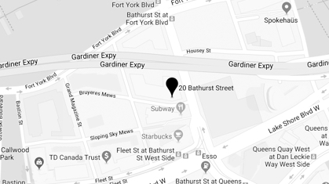

<footer>
  <div class="gutter-container">
    <div class="row">
      <div class="col-md-6 col-sm-6">
        <h3>Who are we?</h3>
        <p>Tasty. Captivating. Loud. Intimate. Refreshing. Innovative. New. Through the use of shipping containers, Stackt is taking unused land and transforming it into a new way to learn more about the community that surrounds us. Feed your curiosity and come discover what Stackt contains.</p>
        <div class="social-container">
          <a href="" class="mention">@stacktmarket</a>
          <a href="" class="icon-instagram btn-qu"></a>
          <a href="" class="icon-twitter btn-qu"></a>
        </div>
      </div>
      <div class="col-md-6 col-sm-6">
        
      </div>
    </div>
    <div class="row">
      <div class="col-md-6 col-sm-6 privacy-container">
        <a href="privacy">Privacy Policy</a>
        &copy; Copyright 2018 Stackt. All rights reserved.
      </div>
      <div class="col-md-6 col-sm-6 address-container">
          <div class="row">
              <div class="col-md-4 col-sm-4">
                <address>
                  <strong>28 Bathurst St.</strong>
                  Toronto, ON<br />
                  M5S 2R5
                </address>
              </div>
              <div class="col-md-8 col-sm-8">
                <div class="Hours">
                    <strong>Hours</strong>
                    Monday - Saturday 9am - 11pm<br />
                    Sunday - 11am - 6pm
                </div>
              </div>
            </div>

      </div>
    </div>
  </div>
</footer>